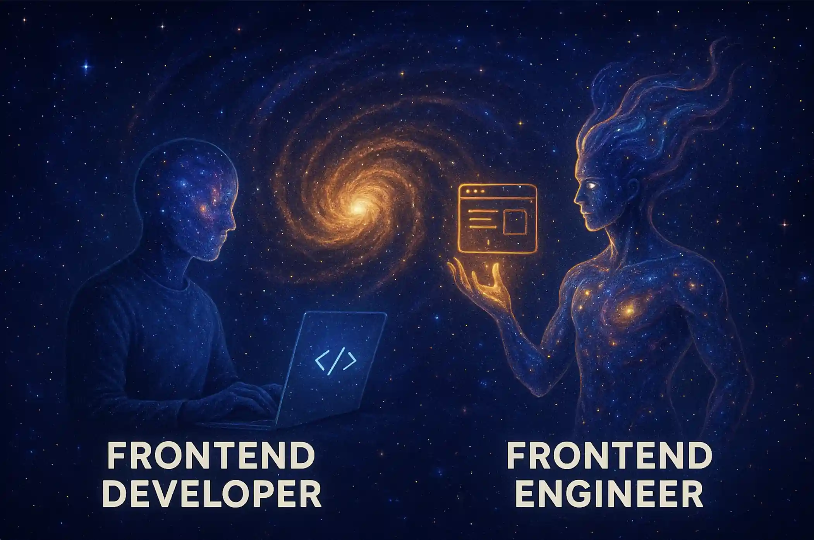

Engineering /
Developer vs Engineer
What distinguishes a frontend developer from a frontend engineer, and how each role shapes interfaces and systems.
Frontend Developer builds the interface.
Frontend Engineer shapes the universe behind it.

In the tech industry, the terms "developer" and "engineer" are often used interchangeably, but they can imply different roles and responsibilities. Understanding these distinctions can help clarify expectations and career paths.